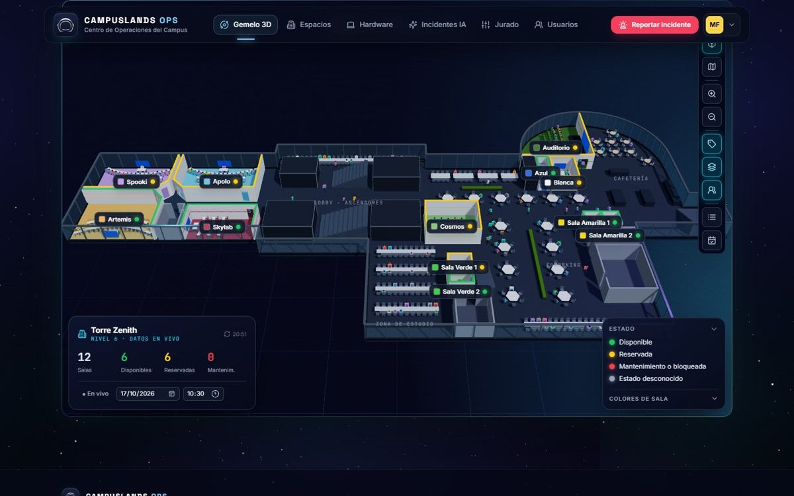
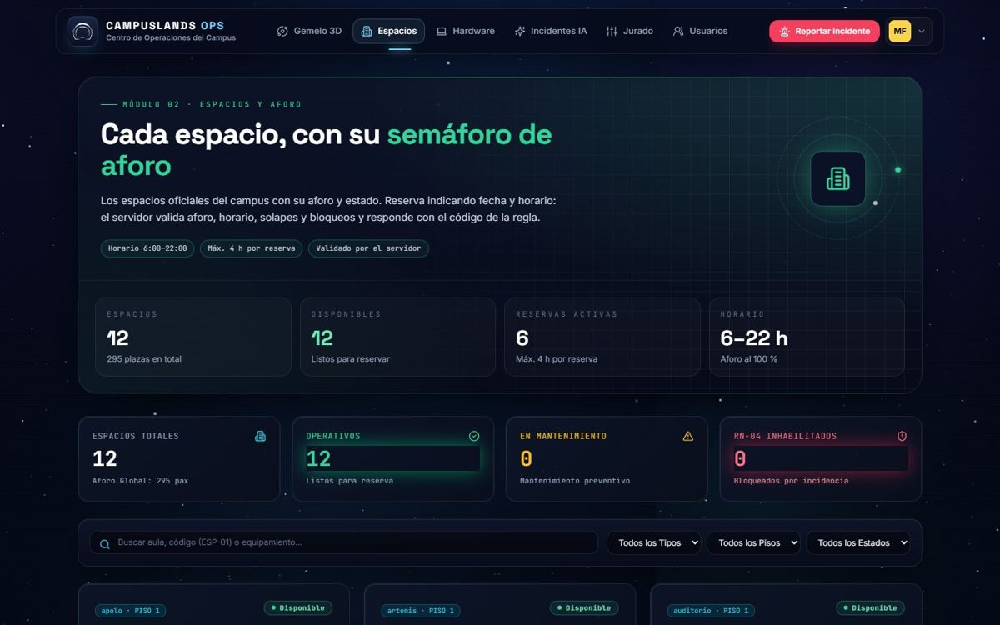
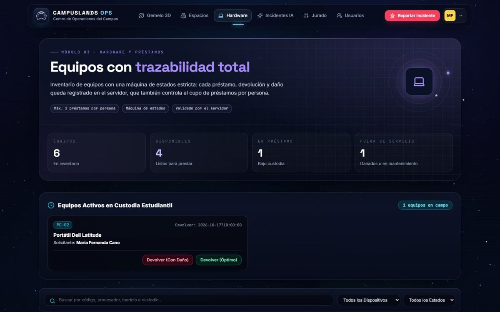
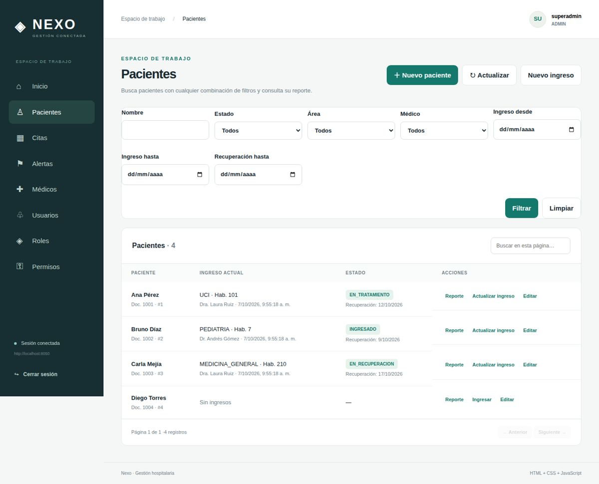
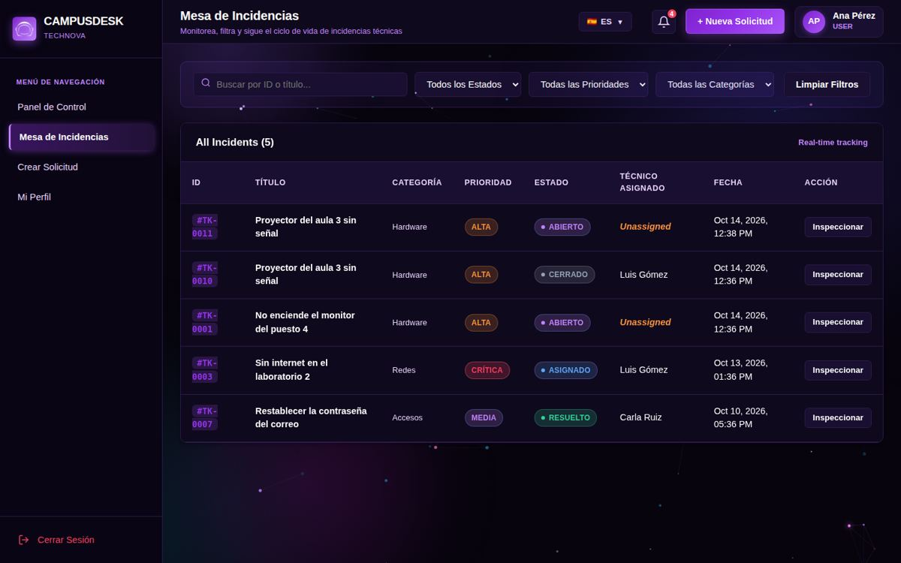
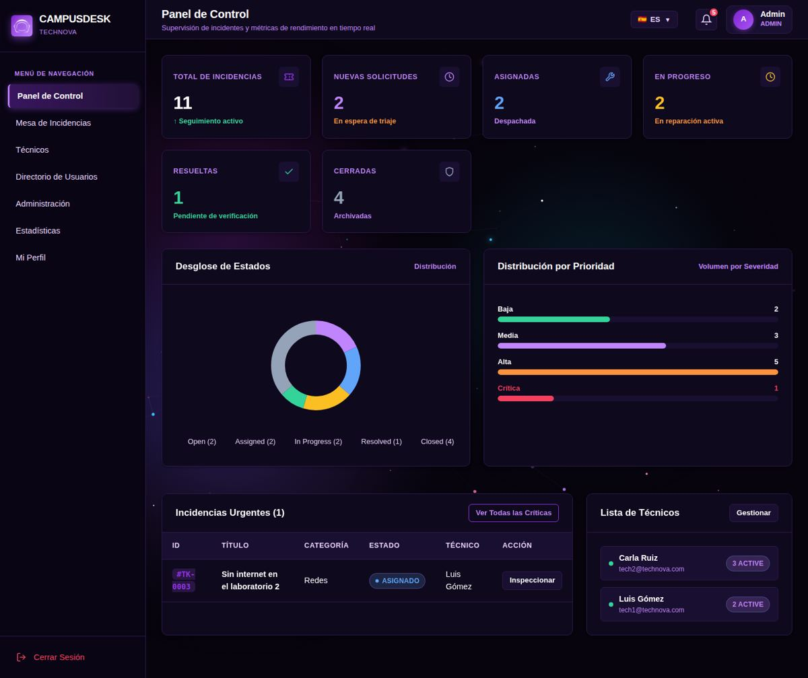
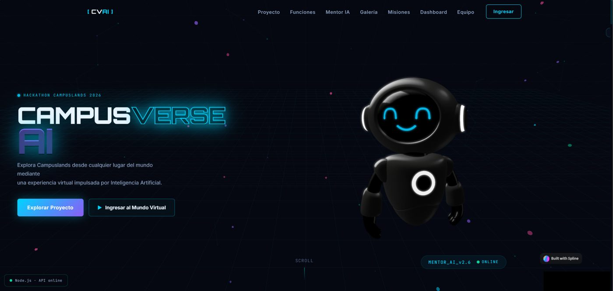
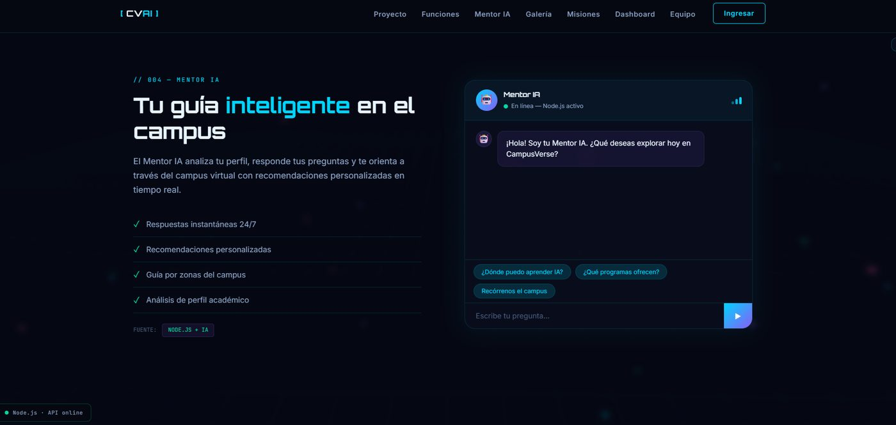
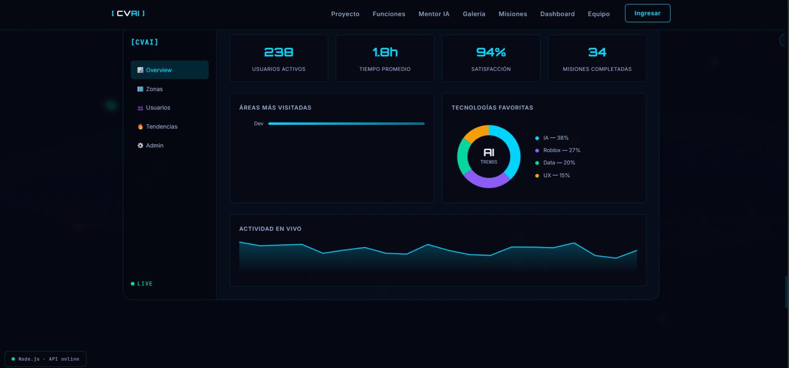

Estás aquí
Michael Santos
Full-Stack Developer
Construyo productos web de punta a punta: interfaces claras, APIs sólidas y código que se puede mantener. Este portafolio es un mapa de mi sistema — tres líneas, una por cada parte de lo que hago.
Línea Identidad
Quién soy, cómo pienso y a quién busco ayudar. Tres paradas.
R1Perfil profesional
Soy desarrollador full-stack con foco en construir productos web rápidos, accesibles y fáciles de mantener. Disfruto tanto de resolver un bug esquivo como de diseñar una interfaz que se sienta natural para quien la usa.
R2Misión · Visión · Valores
Misión: convertir necesidades reales en software confiable y fácil de escalar.
Visión: crecer como ingeniero full-stack aportando en proyectos con impacto real.
Valores: código limpio, comunicación honesta y aprendizaje constante.
R3A quién va dirigido
Empresas y equipos que buscan un desarrollador full-stack, o clientes con una idea de producto web.
Combinación: Comunicación clara — conecta cómo pienso (Identidad) con cómo entrego (Servicios)
Línea Servicios
Qué puedo construir para vos, con qué herramientas y qué problema resuelvo.
S1Desarrollo Web Full-Stack
Sitios y aplicaciones a medida, desde el frontend hasta la base de datos.
S2APIs y Backend
APIs REST, integraciones y lógica de servidor robusta y bien documentada.
S3Aplicaciones Web
Apps interactivas (SPA) con React u otros frameworks modernos.
S4Automatización y Soporte
Scripts que ahorran tiempo, mantenimiento y resolución de bugs.
S5Diseño y optimización de bases de datos
Modelado, normalización y consultas eficientes — de un archivo plano a un esquema relacional que escala.
S6Stack y certificaciones
Nivel de dominio
Frameworks & librerías
Bases de datos
Herramientas & DevOps
Otras
Habilidades blandas
Comunicación clara
Explico ideas técnicas en términos simples.
Trabajo en equipo
Colaboro con diseño, producto y otros/as devs.
Resolución de problemas
Descompongo problemas grandes en pasos chicos.
Adaptabilidad
Aprendo tecnologías nuevas rápido.
Gestión del tiempo
Priorizo lo que realmente mueve la aguja.
Pensamiento crítico
Busco la solución más simple y sólida.
- Bachillerato — NIGRINIS
- Técnico en Desarrollo de Sistemas — Campuslands, dic. 2025 – nov. 2026
- Técnico en Desarrollo de Sistemas con Inteligencia Artificial — Campuslands, dic. 2025 – nov. 2026 Etapa lectiva (~7-8 meses) en Globant
Combinación: Git — conecta el proceso de Servicios con lo que queda publicado en Evidencia
Línea Evidencia
Siete proyectos del entrenamiento: contexto, rol y resultado en cada parada. Contexto, rol y resultado en cada parada.
E1Campus Ops — operación del campus con gemelo digital 3D
Contexto: hackatón Campuslands "El campus bajo presión": aulas reservadas dos veces o por encima de su aforo, equipos prestados sin control e incidencias que llegaban como texto libre sin prioridad ni responsable.
Mi rol: líder técnico del equipo de 4 personas. Me encargué de los datos y la integración: ingesta, normalización y validación del dataset oficial del campus (con cuarentena para registros inválidos) y la conexión entre el backend en FastAPI y el frontend en React.
Resultado: plataforma con 5 módulos (espacios, hardware y préstamos, incidencias, administración y gemelo digital 3D de Torre Zenith), reglas de negocio que el servidor valida con códigos propios (RN-01, RN-02…) y triaje de incidencias con IA: la IA recomienda, las reglas deciden.
E2NEXO — gestión hospitalaria con permisos por rol
Contexto: un hospital necesitaba consultar pacientes, médicos, ingresos y citas, pero cada perfil (administración, medicina, enfermería y recepción) solo debía ver y modificar lo que le corresponde.
Mi rol: implementé los módulos de reportes, alertas y filtros de pacientes sobre una base de seguridad con Spring Security y JWT, junto con las reglas de acceso por rol y el despliegue completo con Docker Compose.
Resultado: aplicación web que se levanta con un solo comando (PostgreSQL, backend y frontend), API documentada con Swagger y pruebas automáticas que cubren la seguridad —incluida la escalada de privilegios— y el flujo completo de cada rol.
E3CampusDesk — mesa de ayuda de incidencias TI
Contexto: una empresa de tecnología recibía solicitudes de soporte por canales dispersos, sin un ciclo de vida claro ni control de quién podía ver o cambiar cada ticket.
Mi rol: en un equipo de 4, fui responsable de la base de datos, las pruebas y la documentación: entidades y enums JPA, repositorios, schema.sql y data.sql, diagrama entidad-relación, PostgreSQL con Docker y el README del proyecto.
Resultado: API REST con ciclo de vida completo del ticket (OPEN → ASSIGNED → IN_PROGRESS → RESOLVED → CLOSED), seguridad JWT por rol y 134 pruebas automáticas, con trabajo en ramas por integrante y merges a develop por pull request.
E4CampusVerse AI — mentor educativo con IA
Contexto: hackathon de innovación educativa "Campuslands Inteligente" — el reto era usar IA, analítica de datos y gamificación para personalizar el acompañamiento académico, combinando un campus virtual en Roblox con una plataforma web.
Mi rol: documenté la arquitectura del proyecto y resolví la integración del webhook entre el frontend y el Mentor IA (n8n + Gemini) para que el chat respondiera en tiempo real.
Resultado: demo funcional de punta a punta (campus en Roblox + Mentor IA + dashboard analítico) entregada para la hackathon.
E5RapidExpress — gestión de flotas y rutas
Contexto: una empresa de logística coordinaba rutas y seguimiento de envíos con hojas de cálculo y llamadas telefónicas, sin visibilidad real del estado de una entrega.
Mi rol: desarrollé el módulo de flota de vehículos y personal de conducción (alta, estados, historial de mantenimiento, asignación conductor-vehículo) sobre una arquitectura MVC con DAO y MySQL.
Resultado: sistema de consola con 6 módulos (flota, personal, paquetería, rutas, reportes, auditoría) y bitácora de auditoría doble, en archivo y en base de datos.
E6CampusBuild — gestión de proyectos de construcción
Contexto: una empresa de construcción necesitaba una herramienta para planificar proyectos: actividades, hitos, recursos humanos y cronograma, sin depender de hojas sueltas.
Mi rol: lideré el frontend en equipo — estructura del proyecto, Web Components (layout, modales), los controladores de proyectos y de recursos, y el cronograma tipo Gantt — sobre una arquitectura MVC en JavaScript nativo.
Resultado: SPA completa con CRUD de proyectos, actividades, hitos y recursos, cronograma visual y persistencia en localStorage, sin frameworks ni dependencias externas.
E7Netflix DB — normalización a PostgreSQL
Contexto: taller de laboratorio de bases de datos — normalizar el catálogo de Netflix (8.807 títulos, dataset de Kaggle) de un CSV plano en 1FN a un esquema relacional en 3FN.
Mi rol: en un equipo de 3, aporté el dataset fuente y el diagrama entidad-relación del modelo normalizado. El diseño del esquema, el ETL y las consultas fueron responsabilidad de un compañero.
Resultado: catálogo normalizado en PostgreSQL (de 1 tabla plana a 8 tablas relacionadas), con consultas JOIN parametrizadas y un respaldo restaurable del esquema completo.
E1 · Línea Evidencia
Campus Ops — operación del campus con gemelo digital 3D
Contexto: hackatón Campuslands "El campus bajo presión": aulas reservadas dos veces o por encima de su aforo, equipos prestados sin control e incidencias que llegaban como texto libre sin prioridad ni responsable.
Mi rol: líder técnico del equipo de 4 personas. Me encargué de los datos y la integración: ingesta, normalización y validación del dataset oficial del campus (con cuarentena para registros inválidos) y la conexión entre el backend en FastAPI y el frontend en React.
Resultado: plataforma con 5 módulos (espacios, hardware y préstamos, incidencias, administración y gemelo digital 3D de Torre Zenith), reglas de negocio que el servidor valida con códigos propios (RN-01, RN-02…) y triaje de incidencias con IA: la IA recomienda, las reglas deciden.
Desafío principal
Los datos oficiales venían incompletos e inconsistentes entre archivos. Diseñé un proceso de ingesta que normaliza, valida y reconcilia cada registro antes de guardarlo; lo que no cumple las reglas va a una cuarentena con su reporte, en vez de romper la base o perderse en silencio.
Capturas del proyecto



E2 · Línea Evidencia
NEXO — gestión hospitalaria con permisos por rol
Contexto: un hospital necesitaba consultar pacientes, médicos, ingresos y citas, pero cada perfil (administración, medicina, enfermería y recepción) solo debía ver y modificar lo que le corresponde.
Mi rol: implementé los módulos de reportes, alertas y filtros de pacientes sobre una base de seguridad con Spring Security y JWT, junto con las reglas de acceso por rol y el despliegue completo con Docker Compose.
Resultado: aplicación web que se levanta con un solo comando (PostgreSQL, backend y frontend), API documentada con Swagger y pruebas automáticas que cubren la seguridad —incluida la escalada de privilegios— y el flujo completo de cada rol.
Desafío principal
Un médico solo debe ver a sus propios pacientes, aunque conozca el ID de otro. Validé la propiedad del recurso en la capa de servicio, no solo en la interfaz, y lo cubrí con pruebas que intentan acceder a datos ajenos con cada rol.
Capturas del proyecto

E3 · Línea Evidencia
CampusDesk — mesa de ayuda de incidencias TI
Contexto: una empresa de tecnología recibía solicitudes de soporte por canales dispersos, sin un ciclo de vida claro ni control de quién podía ver o cambiar cada ticket.
Mi rol: en un equipo de 4, fui responsable de la base de datos, las pruebas y la documentación: entidades y enums JPA, repositorios, schema.sql y data.sql, diagrama entidad-relación, PostgreSQL con Docker y el README del proyecto.
Resultado: API REST con ciclo de vida completo del ticket (OPEN → ASSIGNED → IN_PROGRESS → RESOLVED → CLOSED), seguridad JWT por rol y 134 pruebas automáticas, con trabajo en ramas por integrante y merges a develop por pull request.
Desafío principal
Las pruebas tenían que correr igual en los 4 computadores del equipo, sin depender de una base instalada. Configuré un perfil de pruebas con H2 en memoria y datos semilla coherentes con PostgreSQL, para que cualquiera pudiera ejecutar la suite completa con un solo comando.
Capturas del proyecto


E4 · Línea Evidencia
CampusVerse AI — mentor educativo con IA
Contexto: hackathon de innovación educativa "Campuslands Inteligente" — combinar un campus virtual en Roblox con una plataforma web de IA para personalizar el acompañamiento académico.
Mi rol: documenté la arquitectura del proyecto y resolví la integración del webhook entre el frontend y el Mentor IA (n8n + Gemini 2.5 Flash) para que el chat respondiera en tiempo real.
Resultado: demo funcional de punta a punta — campus en Roblox, Mentor IA con RAG y dashboard analítico — entregada para la hackathon.
Desafío principal
El chat del Mentor IA no respondía de forma confiable a través del webhook de n8n — tuve que ajustar la integración entre el frontend y el flujo de n8n para que las respuestas de Gemini llegaran correctamente y en tiempo real al usuario.
Capturas del proyecto



E5 · Línea Evidencia
RapidExpress — gestión de flotas y rutas
Contexto: una empresa de logística coordinaba rutas y seguimiento de envíos con hojas de cálculo y llamadas telefónicas entre operadores y conductores, sin visibilidad real del estado de una entrega.
Mi rol: desarrollé el módulo de flota de vehículos y personal de conducción — alta, estados (Disponible/En ruta/En mantenimiento), historial de mantenimientos y asignación conductor-vehículo — sobre una arquitectura MVC con capa DAO y MySQL.
Resultado: sistema de consola con 6 módulos (flota, personal, paquetería, rutas, reportes, auditoría), datos de prueba coherentes entre tablas y bitácora de auditoría escrita en archivo y en base de datos a la vez.
Desafío principal
Evitar que un conductor quedara asignado a dos vehículos a la vez, sin depender solo de validarlo en el código Java. Se resolvió con un índice único sobre la columna del conductor en la base de datos — que además permite que varios vehículos queden sin asignar, pero nunca duplica un conductor.
E6 · Línea Evidencia
CampusBuild — gestión de proyectos de construcción
Contexto: una empresa de construcción necesitaba planificar proyectos — actividades, hitos, recursos humanos y cronograma — sin depender de hojas sueltas.
Mi rol: lideré el frontend en equipo de 3 personas — estructura del proyecto, Web Components de layout y modales, los controladores de proyectos y de recursos, y el cronograma tipo Gantt — sobre una arquitectura MVC en JavaScript nativo, sin frameworks.
Resultado: SPA completa con CRUD de proyectos, actividades, hitos y recursos, cronograma visual y persistencia en localStorage.
Desafío principal
Consolidar el código de 3 personas que habían nombrado y organizado sus archivos de formas distintas (modelos, servicios, controladores duplicados o con nombres distintos) en una sola arquitectura MVC coherente, sin perder funcionalidad en el camino.
E7 · Línea Evidencia
Netflix DB — normalización a PostgreSQL
Contexto: taller de laboratorio de bases de datos — el archivo plano netflix_titles.csv (8.807 títulos, dataset de Kaggle) mezclaba en una sola fila datos multivaluados: elenco, directores, países y géneros.
Mi rol: en un equipo de 3, aporté el dataset fuente y el diagrama entidad-relación del modelo en 3FN. El diseño del esquema, el ETL y las consultas SQL fueron responsabilidad de un compañero.
Resultado: catálogo normalizado de 1FN a 3FN (1 tabla plana → 8 tablas relacionadas: títulos, personas, géneros, países, ratings), con consultas JOIN parametrizadas y un respaldo restaurable vía Docker.
Desafío principal
El dataset tenía una anomalía real: en un grupo de filas sin país registrado, el valor de duración aparecía desplazado a la columna de clasificación por edad (ej. rating = "74 min"). El ETL detecta ese patrón con una expresión regular y reubica el valor en la columna correcta antes de normalizar.
Terminal Contacto
Fin de la línea. Redes profesionales, correo o WhatsApp — elegí el canal que prefieras.